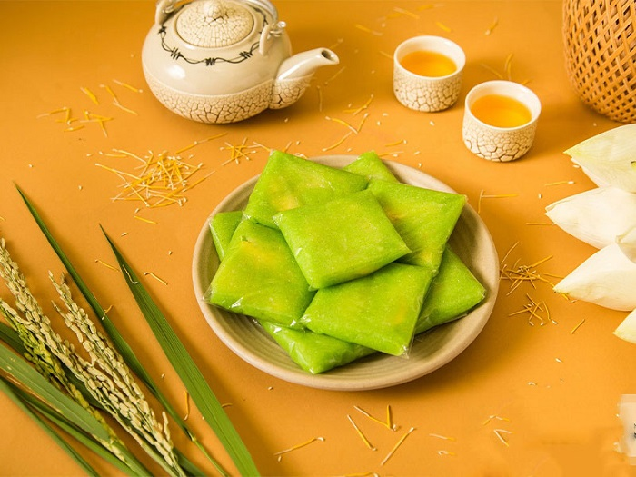
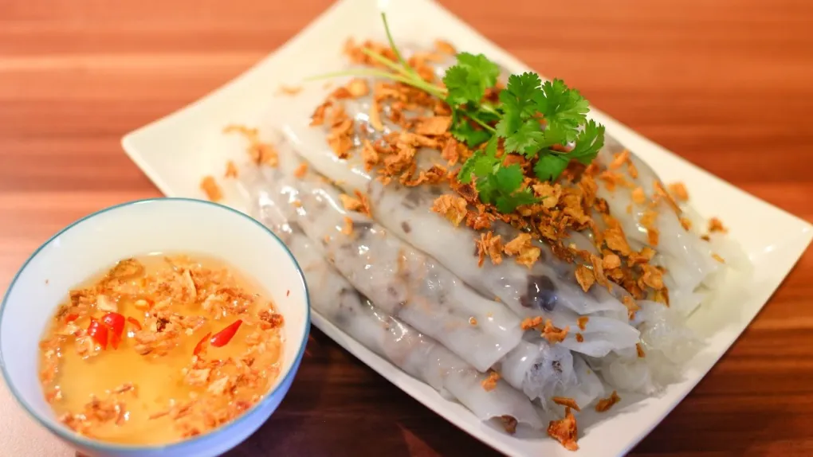
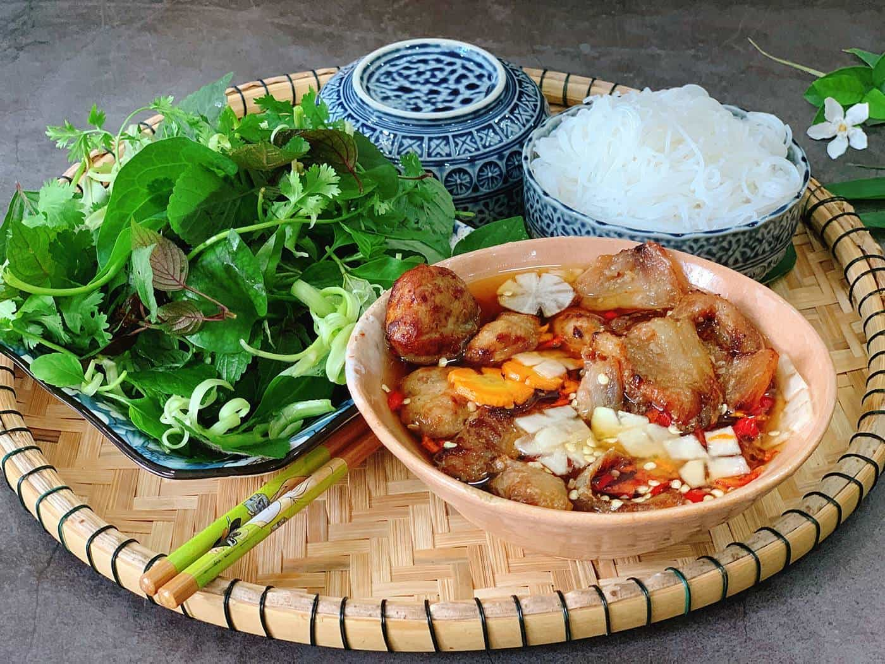
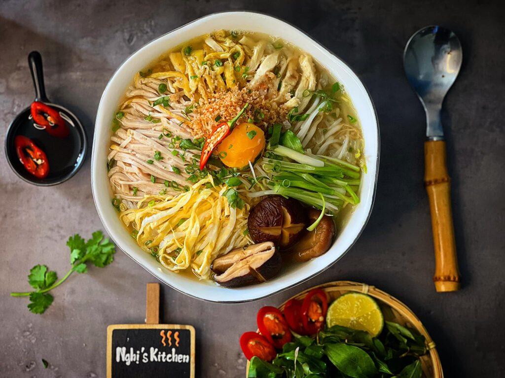
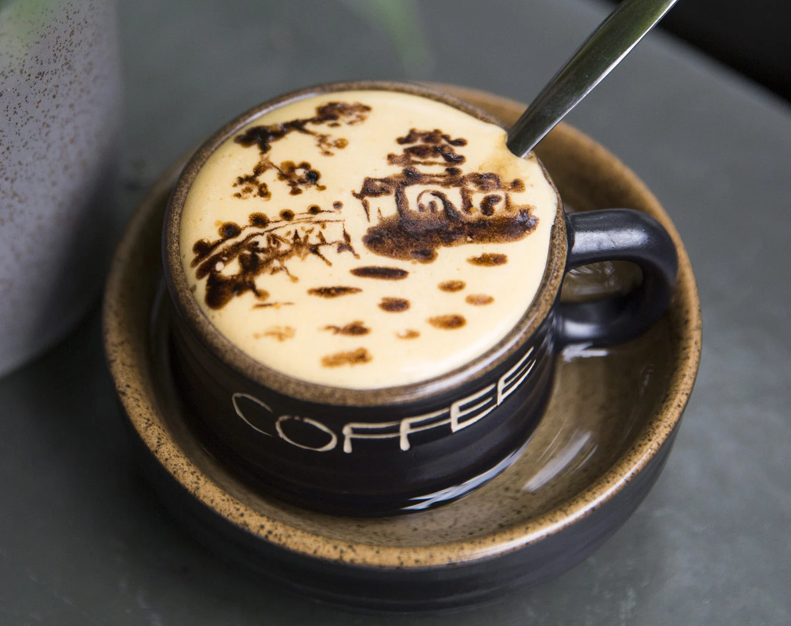
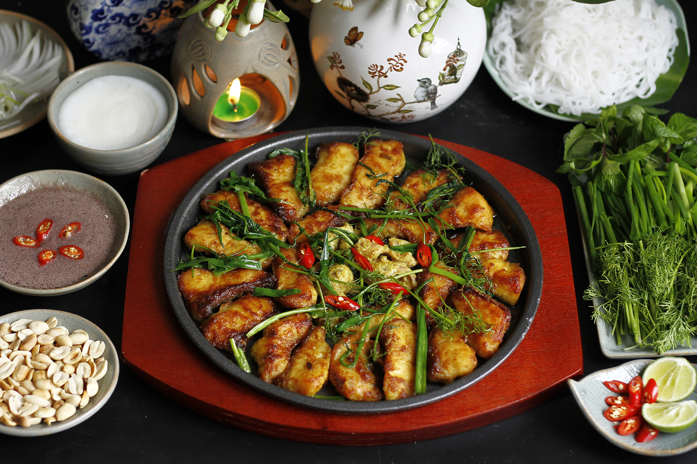
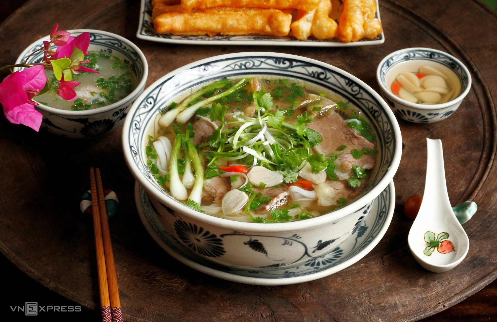

Bánh Cốm Hà Nội
Bánh cốm là món quà quê thanh nhã với màu xanh dịu mát, nhân đậu xanh ngọt ngào thơm lừng mùi lá sen đượm đà vị thu Hà Nội.

Bánh Cuốn Tráng Tay
Lớp bánh tráng mỏng dẻo ôm trọn nhân thịt mộc nhĩ thơm phức, ăn kèm hành phi giòn rụm và nước mắm chua ngọt ấm nóng.

Bún Chả Hà Nội
Chả miếng và chả viên được nướng xém cạnh trên than hồng, thả vào bát nước mắm chua ngọt đậm đà ăn kèm bún tươi và rau sống.

Bún Thang Cổ Truyền
Món ăn cầu kỳ đòi hỏi sự tỉ mỉ với hàng chục nguyên liệu như trứng tráng mỏng, lườn gà xé, giò lụa thái chỉ và nước dùng trong ngọt.

Cà Phê Trứng
Lớp kem trứng đánh bông mịn béo ngậy kết hợp hoàn hảo với vị cà phê phin đắng nhẹ đậm đà, tạo nên thức uống độc đáo nổi tiếng.

Chả Cá Lăng
Cá lăng ướp riềng mẻ nướng vàng rồi xào trực tiếp trên chảo cùng hành hoa, thì là tươi, ăn kèm mắm tôm tỏi ớt đậm vị.

Phở Bò Gia Truyền
Món ăn quốc hồn quốc túy với nước dùng ninh từ xương bò ngọt thanh, bánh phở mềm dẻo cùng những lát thịt bò tươi ngon hảo hạng.